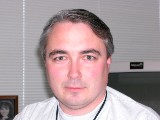

|
|
|
| Matthew
Peterson matt@caldera.com OpenSLP project founder, currently working at Vintela, Inc |
 |
| Jon
Carey jcarey@calderasystems.com As a senior developer of a real-world OpenSLP enabled product at Caldera Systems, Jon has provided valuable feedback and direction for the OpenSLP project. |
 |
| David
McCormack david.mccormack@ottawa.com Born in 1976, in Ottawa, Canada. Dave studied at Carleton University, receiving a degree Computer Science. Daves contributions to OpenSLP were part of a research project
into Service Location Protocol sponsored by Natural Sciences and Engineering Research
Council of Canada and Carleton
University. |
 |
| Ganesan Rajagopal rganesan@myrealbox.com |
|
| Matthieu Desmons mdes@ocegr.fr |
|
| Evan Hughes hughes@lab43.org |
|
| John Calcote jcalcote@novell.com John is a Sr. Software Engineer working on Identity Services and Directory Services technology at Novell, Inc. He studied Computer Science at Brigham Young University, and received his Bachelors of Science degree 1993. His contributions to the OpenSLP project include DHCP functionality and general maintenance. He is the current maintainer and project administrator OpenSLP. |
 |
| Michael
Day mday@soft-hackle.net Special thanks to Mike Day who has graciously contributed the SLP filter and predicate code in the the OpenSLP 1.1.x branch. |
|
| Nick Wagner nwagner@etcconnect.com Nick is a Sr. Software Engineer working at Electronic Theatre Controls. He graduated from the University of Wisconsin - Madison with a BS in 1995, and while he has worked on other things, he seems to be continually sucked into projects requiring knowledge of network communications. |
Developers listed in the order that they joined the OpenSLP project